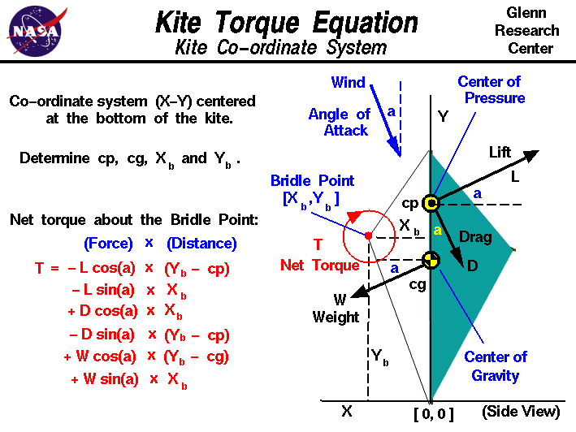

|

Newton's
first law of motion
specifies that when all the external forces on an object are balanced,
there is no net external force and the object moves at a constant velocity
or remains at rest (velocity equals zero). This law holds for both linear
motion and forces and for twisting motion and twisting forces. Twisting
forces are called
torques, or moments.
The twisting motion
occurs about some point called the pivot. A torque is related to
a linear force; the torque about a point is equal to the force times
the perpendicular distance to the point. In
equilibrium,
there is
no net torque about the pivot and the angular velocity is constant
(or zero).
A
kite
flies because of the interactions of the
forces
on the kite. In order to fly, the
aerodynamic lift, L,
generated by the
surface
of the kite must be greater or equal to the
weight, W,
of the kite. The
aerodynamic force
which creates the lift also creates an
aerodynamic drag, D,
which is opposed by the tension in the
control line.
The kite is attached to the control line by a
bridle string which is tied to the control line at the
bridle point.
The aerodynamic forces act through the
center of pressure, cp,
while the weight acts through the
center of gravity, cg.
In flight, the kite pivots about the
bridle point because of the
torques
created by the weight and aerodynamic forces.
On this page, we show the equation which describes the
torque about the bridle point. To simplify the calculation, we choose a
co-ordinate system X-Y which is centered at the base of the kite, with
the Y-axis along the length of the kite, and the X-axis along the reference
line for the computation of cg and cp. In this co-ordinate system, the
wind approaches from above at the
inclination angle, a,
and the lift,
drag, and weight
vectors
are all inclined at angle a to the co-ordinates.
Knowing the location of cg, cp and the co-ordinates of the
bridle point [xb,yb], we can compute the net torque T about
the bridle point. Taking a positive torque as clockwise about the bridle point:
T = - L * cos(a) * (yb - cp)
- L * sin(a) * xb
+ D * cos(a) * xb
- D * sin(a) * (yb - cp)
+ W * cos(a) * (yb - cg)
+ W * sin(a) * xb
where sin(a) and cos(a) are the
trigonometric
sine and cosine of angle a.
Notice that the distances from the bridle point are measured perpendicular
and not just
directly to the center of pressure and center of gravity.
This produces two torque
components
for each force;
the X-component of the force times the Y distance,
and the Y-component of the force times the X distance.
We can use the torque equation to determine the inclination
angle a for which the torque T
is zero.
This is called the trim angle of the kite.
As the kite rotates about the bridle point, the inclination angle
between the kite and the wind changes. Since the magnitude
and direction of the aerodynamic force
depends on this angle,
the aerodynamic torque about the bridle point also changes.
When the aerodynamic torque balances the
weight torque, the kite reaches an
equilibrium, or balanced,
condition and sits at a fixed inclination angle with no
further rotation about the bridle point.
But if the aerodynamic torque does not equal the weight torque, the kite
continues to rotate under the action of the unequal torques. It is possible
that the aerodynamic torque may never equal the weight torque for a given design
and such a design would be called unbalanced.
Considering a balanced design, the
lift
of the kite depends on the trim angle which is a constant.
Since the weight of the kite is constant,
the difference between the lift and the weight is also constant.
If the lift minus weight is large, the kite will climb faster, fly higher, and is able
to lift more string than if the lift minus weight is small.
Since the trim angle depends on the balance of torques, and the torques
depend on the location
of the bridle point relative to the cg and cp,
the location of the bridle point has a major effect on the performance of the
kite.
The location of the bridle point is set by the flyer before
launch
by moving the knot along the bridle string.
If a kite naturally returns to an equilibrium condition when it is perturbed,
the kite is said to be stable.
To determine the kite
stability
we also use the torque equation given above.
The mathematical equations involved with the
forces
and
torques
on a kite can be solved
by using a computer program. You can use the
KiteModeler program to further study how kites work
and to design your own kites.
Activities:
Guided Tours
Navigation ..


- Beginner's Guide Home Page
|